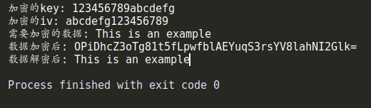
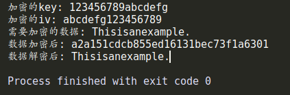

Node.js的crypto模块提供了一组包括对OpenSSL的哈希、HMAC、加密、解密、签名，以及验证等一整套功能的封装。具体的使用方法可以参考这篇文章中的描述：node.js_crypto模块。
本文重点介绍在使用createCipheriv方法时所遇到的坑。对应的解密算法createDecipheriv应该是一样的问题。
按照文档中的描述，createCipheriv方法接受三个参数：algorithm用于指定加密算法，如aes-128-ecb、aes-128-cbc等；key是用于加密的密钥；iv参数可选，用于指定加密时所用的向量。注意这里的密钥必须是8/16/32位，如果加密算法是128，则对应的密钥是16位，如果加密算法是256，则对应的密钥是32位。代码如下：
const crypto = require("crypto");
function encrypt (key, iv, data) {
let decipher = crypto.createCipheriv('aes-128-cbc', key, iv);
// decipher.setAutoPadding(true);
return decipher.update(data, 'binary', 'base64') + decipher.final('base64');
}
function decrypt (key, iv, crypted) {
crypted = new Buffer(crypted, 'base64').toString('binary');
let decipher = crypto.createDecipheriv('aes-128-cbc', key, iv);
return decipher.update(crypted, 'binary', 'utf8') + decipher.final('utf8');
}下面是测试结果：
let key = '123456789abcdefg';
console.log('加密的key:', key);
let iv = 'abcdefg123456789';
console.log('加密的iv:', iv);
let data = "This is an example";
console.log("需要加密的数据:", data);
let crypted = encrypt(key, iv, data);
console.log("数据加密后:", crypted);
let dec = decrypt(key, iv, crypted);
console.log("数据解密后:", dec);
以上加密和解密的算法在node.js中运行没有问题。但如果服务端用的不是node.js，而是Java、C#或者C语言编写的服务，则用node.js加密之后的结果在服务端验证无法通过。究其原因可能是因为node.js在实现createCipheriv的算法上与其它语言有差异，而这个差异也可能体现在编码格式上。在上述node.js代码中，无论如何修改encrypt函数中update()和final()方法的参数，例如改为"utf8"、"hex"，或者将传入的参数改为buffer等，虽然得出的加密结果会有区别，但是服务端验证都会失败。
在多次尝试失败后，我们只能认定node.js中的crypto模块与其它语言中的实现存在差异。所以我们不得已选择其它的开源包来替换node.js中的crypto模块。经过尝试，aes-js包是个不错的选择。按照文档中的描述，我们将上面node.js中的encrypt函数修改为：
const aesjs = require('aes-js');
function encrypt (key, iv, data) {
let aesCbc = new aesjs.ModeOfOperation.cbc(aesjs.utils.utf8.toBytes(key), aesjs.utils.utf8.toBytes(iv));
let encryptedBytes = aesCbc.encrypt(aesjs.utils.utf8.toBytes(data));
return aesjs.utils.hex.fromBytes(encryptedBytes);
}
function decrypt (key, iv, crypted) {
let aesCbc = new aesjs.ModeOfOperation.cbc(aesjs.utils.utf8.toBytes(key), aesjs.utils.utf8.toBytes(iv));
let encryptedBytes = aesCbc.decrypt(aesjs.utils.hex.toBytes(crypted));
return aesjs.utils.utf8.fromBytes(encryptedBytes);
}上面这段代码要求加密的数据是16位，测试结果如下：
let key = '123456789abcdefg';
console.log('加密的key:', key);
let iv = 'abcdefg123456789';
console.log('加密的iv:', iv);
let data = "Thisisanexample.";
console.log("需要加密的数据:", data);
let crypted = encrypt(key, iv, data);
console.log("数据加密后:", crypted);
let dec = decrypt(key, iv, crypted);
console.log("数据解密后:", dec);
采用aes-js计算得到的加密结果可以通过服务端的验证。